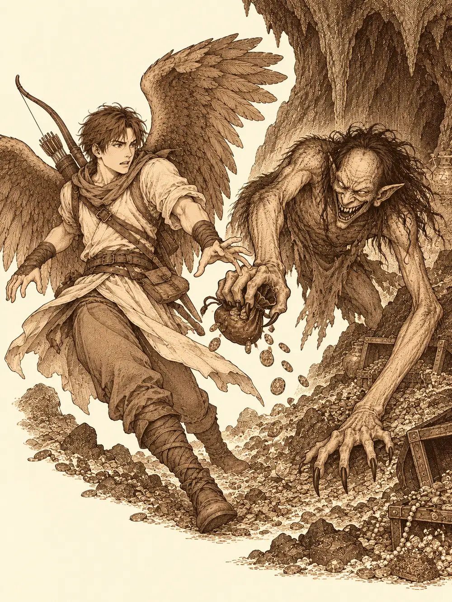

Capítulo 15
Atrapa al ladrón
Libro II · El favor del shogun
El biberón goteaba leche tibia sobre la manga de Sirth, y el bebé seguía sin querer saber nada de él. Lo apartaba con sus manitas, arrugaba la cara y lloraba con una fuerza que no correspondía a su tamaño, mientras la hermana mayor tiraba de la capa del clérigo para que le hiciera caso a ella. Las dos niñas del templo habían llegado vivas a la base. Ya no tenían la respiración arrastrada de la montaña. Ahora tenían energía de sobra, y nadie en la base sabía qué hacer con ella.
Eran kender. Ninguno de los cazadores había tratado nunca con esa gente: se parecían a los elfos, con las orejas puntiagudas, pero eran pequeños, de la estatura de un mediano, y por lo visto no se estaban quietos ni dormidos.
Jin se inclinó sobre el bebé y le puso una cara ridícula para hacerlo reír, con la idea de que, distraído, se dejaría alimentar. Funcionó a medias. Shiru resopló, como quien sabe que va a arrepentirse, se quitó la parte de arriba del kimono, se puso a cuatro patas y empezó a saltar de un lado a otro de la habitación como un carnero.
"Una ovejita", contaba. "Dos ovejitas. Tres ovejitas".
El bebé lo miraba. Se le escapó una risa, después otra, y entre risa y risa fue bebiendo, y los párpados le empezaron a pesar. Shiru siguió saltando hasta que se le acabó el aire y se derrumbó en el suelo, jadeando, convencido de haber contado cuatrocientas sesenta y siete.
Mientras tanto, la mayor había salido corriendo hacia la estancia del kamaitachi.
"¡Bichito! ¡Bichito!".
Hayate fue detrás de ella. El yokai de las cuchillas estaba tranquilo; se acercó a olerla, la dejó estar y se fue a beber agua. Junto a la puerta, los dos mujina de la guardia, dos tejones vestidos de samurái con la cimitarra al cinto, saludaban como reclutas cada vez que alguien pasaba por delante.
El bebé estaba casi dormido cuando el nekomata, que lo observaba todo desde su rincón con una sonrisa de oreja a oreja, estiró una de sus colas y le hizo cosquillas en la nariz. El bebé estornudó y volvió a llorar.
"Media hora", dijo Sirth, con el pequeño en brazos y la voz al borde de quebrarse. "Media hora para que se duerma". Se apartó del gato con el bebé apretado contra el pecho. "No puedo con esto. Id a buscar a alguien. A alguien que entienda a estas criaturas. Un kender, si hace falta".
La taberna estaba medio vacía y olía a madera fría. Shiro, el antiguo ronin que Kitaro había acogido, los recibió con la cara apagada y una reverencia.
"Hola, cazadores".
Le preguntaron cómo estaba, y él tardó en contestar.
"El señor Kitaro me ayudó a dejar el alcohol. Y ahora tengo que encargarme yo de la taberna".
Jin le puso una mano en el hombro y le dijo que lo ayudaría cuando pudiera. Shiro se lo agradeció con otra reverencia, más profunda. Después escuchó lo que buscaban y se le iluminó un poco la cara: sí, había visto pasar a uno de esos pequeños de orejas puntiagudas, cosa rara por allí. Iba hacia el sur.
Lo encontraron enseguida. Era un kender joven, bajito, que lo miraba todo con unos ojos enormes y lo tocaba todo con unos dedos aún más rápidos. Cuando los cazadores se le acercaron (un samurái de cara quemada, un ciervo con kimono y escudo y algo que parecía una paloma gigante), el kender no se asustó: se puso a dar vueltas a su alrededor, palpándoles las ropas, las armas, las bolsas. Shiru se escondió el pan.
"Puedes tocar lo que quieras", le advirtió. "Pero el pan no".
Lo invitaron a desayunar. Shiro les sirvió algo de picar y desapareció en la cocina entre ruido de cacharros. El kender se llamaba Tekel. No solía beber, dijo, pero le gustaba acompañar a quien bebía: la gente se olvidaba de sus cosas cuando estaba bebida, y además siempre había una buena historia.
Jin fue al grano. Le ofrecían dos trabajos. Uno, cazar yokai con ellos. Otro, ayudarles con dos niñas de su raza que habían recogido en una montaña peligrosa, huérfanas, que los tenían desbordados. A cambio, comida, refugio y recompensa.
Tekel ladeó la cabeza.
"¿Y por qué los cazáis? ¿No es más interesante preguntarles por qué están ahí?".
Jin bajó la mirada a su cerveza. Antes de llegar a aquel pueblo, reconoció, había sido un cazador con pocos escrúpulos. Allí había empezado a tener un poco más de conciencia. Con algunos yokai habían hablado, y ahora trabajaban para ellos; a otros, a los que no podían dejar sueltos cerca del pueblo, los guardaban en su base hasta decidir qué hacer. Tekel asintió despacio. Siempre era interesante ver el otro lado.
Hayate, entretanto, se había fijado en el arco que el kender llevaba a la espalda: la cuerda, la madera, la curvatura. Le ofreció alguna de sus plumas para las flechas, si se le caía una. Shiru, por su parte, le dio un par de codazos a Jin y le preguntó en voz baja si a este también había que saltarle para que se durmiera.
No llegaron a la base. Al pasar por delante de la herrería, la puerta se abrió de golpe y salió el herrero con el martillo en alto, mirando a todos lados.
"¡Otra vez! ¡Me han vuelto a robar la caja!".
No era la primera vez. Tekel entró sin pedir permiso. Cogió el martillo para ver si debajo había algo, y en lugar de devolverlo a su sitio lo guardó en su mochila. Siguió revisando. En el fondo de la caja quedaban un par de monedas, y en alguna de ellas había un arañazo fino, como si alguien las hubiera recogido a puñados y una uña hubiera rayado el metal. En la madera de la caja había marcas mayores, de cuatro o cinco dedos.
"Garras", dijo, enseñándoles la moneda.
Hayate recorrió las paredes y la puerta sin encontrar señales de que las hubieran forzado. Después se agachó y fue tanteando el suelo, baldosa a baldosa, hasta que una se movió bajo su mano. Debajo había un agujero.
Levantaron más baldosas y el hueco creció hasta dejar paso a alguien de tamaño mediano. Tekel se metió arrastrándose y volvió a salir con tierra en la nariz: el túnel bajaba un poco y luego estaba tapado, con tierra suelta que alguien había echado allí hacía poco. Le dieron una pala y se puso a excavar. Shiru se quedó vigilando junto al agujero, con el herrero a su lado mirando salir la tierra con los ojos como platos.
Los otros recorrieron el pueblo. La madame del local de apuestas también había sido víctima: oro y joyas. En su suelo había cuatro o cinco tablones sueltos y un agujero debajo, y cuando la mujer se subió a la mesa para mirarlo, sonrió, y por un instante su cara fue una calavera.
En la pescadería, el dueño abrió su cajón y se lo enseñó vacío. El alquimista había perdido monedas, polvos mágicos y joyas encantadas. Al tocar sus baldosas, una cedió.
"Pero si hay un agujero aquí", dijo, como si le hubieran ofendido.
Por todas partes era lo mismo: algo entraba de noche por debajo del suelo.

Tekel, entretanto, había llegado a un cruce y había vuelto a buscarlos. Bajaron todos por la herrería, en fila y agachados, con una antorcha que les había prestado el herrero. En el cruce se abrían cuatro túneles. Hayate se acercó a cada uno y olfateó. Tres estaban tapados con tierra, igual que el primero. El cuarto respiraba. Por ahí siguieron.
El túnel desembocaba en una cueva de unos seis metros de alto donde por fin podían ponerse de pie. Había luz, y la luz caía sobre cajas, montones de monedas y joyas que brillaban en el suelo de tierra como si alguien las hubiera derramado sin cuidado.
Shiru fue el primero en agacharse a levantar una caja. Se le quedaron pegadas las manos.
La caja abrió una boca llena de dientes. A su alrededor otros cofres se movieron, se desperezaron como perros viejos y sacaron lenguas largas y babosas. Hayate disparó una flecha tras otra contra el más cercano. Jin desenvainó y la hoja se le prendió con un fuego verde que lamía la madera de los cofres y les arrancaba humo. Uno de ellos le lanzó la lengua y se la pegó al cogote.
Shiru, atrapado, decidió que si el cofre lo agarraba a él, él agarraría al cofre. Lo abrazó. Durante un rato los dos forcejearon como en un baile torpe, el ciervo y el mueble, hasta que Shiru lo levantó en vilo y lo estampó contra otro de sus hermanos. Las flechas de Hayate fueron dejando cofres muertos en el suelo, con la lengua todavía colgando.
Entonces unas garras pasaron rozando a Hayate.
Junto a él había aparecido una criatura encorvada, de brazos larguísimos que casi arrastraban por el suelo y terminaban en garras. Tenía unos ojos diminutos, como dos cabezas de alfiler, y una sonrisa cruel que le partía la cara. Volvió a lanzarse, y esta vez el zarpazo le abrió la carne. Hayate notó que, con la sangre, le desaparecía el peso de la bolsa: las monedas de platino se habían ido con el golpe. La criatura le sonrió y se esfumó. Solo se oyeron unos pasos alejándose.
"Una dodomeki", dijo alguien.
Volvió a aparecer junto a Tekel y le robó a él también. Hayate cargó una flecha y se quedó esperando, con el arco tenso, a que la ladrona volviera a hacerse visible. Cuando lo hizo, la flecha estaba allí. Shiru terminó con el último cofre usando como arma el cadáver de otro, y la cueva quedó para la dodomeki y ellos.
La criatura atacaba y desaparecía, atacaba y desaparecía, y cada vez que tocaba a alguien se llevaba algo. Golpeó a Shiru y le vació el bolsillo. Tekel sacó su odre y fue derramando agua por el suelo para ver dónde se formaban las huellas. Los demás esperaban con las armas listas a que se dejara ver.
Cuando volvió, le cayeron encima a la vez. Shiru tomó carrerilla y la embistió con los cuernos. Jin la cortó con su espada de fuego, y el pelo liso de la criatura empezó a arder en llamitas verdes. Tekel, con sus dos espadas, la hirió y se retiró a tiempo. Hayate, demasiado cerca para el arco, sacó la daga y le pinchó en el lomo.
La dodomeki empezó a comerse las monedas. Se metía puñados en la boca y masticaba el oro y el platino como si fueran pipas, y con cada bocado parecía recobrar algo de fuerza. Hayate vio desaparecer su dinero entre aquellos dientes.
Jin la decapitó de un tajo. La cabeza rodó por el suelo chillando, y de la boca abierta empezaron a salir las monedas que todavía no había tragado.
Recuperaron lo que pudieron. Tekel se quedó con las herramientas que encontró, entre ellas algún martillo del herrero, y con cinco pociones; el oro y las joyas los apartó para devolverlos. Hayate contó cien monedas de oro y se las guardó.
"Por el platino que se ha comido", explicó. "No cojo más".
Al vaciar el cadáver, Shiru descubrió que la criatura llevaba algo redondo a la espalda, bajo un petate de dormir. Era un escudo. Lo levantó, lo sopesó y supo enseguida lo que tenía entre las manos: podía arrojarlo lejos sin que se rompiera y golpear con él tantas veces como quisiera. Por primera vez en su vida, una de sus armas improvisadas no iba a hacerse pedazos al primer golpe.
"Me acabas de hacer el hombre más feliz", le dijo al escudo.
Jin encontró una espada larga, fina, más larga de lo normal. La desenvainó. El acero estaba bien templado, era una Masamune, y al blandirla sintió una fuerza dentro de la hoja capaz de apartar de un golpe a quien tuviera delante. Se la colgó a la espalda y estuvo de mejor humor que de costumbre durante el resto del día.
Cargaron con todo. Se llevaron también el mímico más entero, con la lengua colgando y ya sin pegamento, como trofeo para la base. Volvieron por los túneles más despacio de lo que habían venido, y alguna moneda se les cayó por el camino sin que nadie tuviera espacio para recogerla.
En la herrería, el herrero se acercó a Tekel y le estrechó la mano. Sus técnicas eran muy buenas, le dijo; lo recomendaría a todo el mundo. Tekel le ofreció entonces unas losas muy bonitas que tenía en la mochila. El herrero se las compró por diez monedas, y nadie le contó de dónde habían salido.
Devolvieron el oro y las joyas a cada negocio. En la pescadería encontraron el agujero detrás de unas cajas de tripas de pescado, y el dueño, Haru, recuperó su caja y les pagó la parte de la semana: diez monedas para cada uno. Jin se estaba tomando una cerveza cuando se le atragantó un pensamiento.
"Los niños".
Los mujina seguían en su puesto. El nekomata protestó desde dentro porque nadie le había abierto. Sirth los esperaba con el bebé en un brazo y la expresión de alguien que lleva varias horas contando los minutos.
"Os dije que fuerais un momento a buscar a un kender".
"Y lo hemos encontrado", contestó Jin. "Y de paso hemos resuelto un robo".
Tekel se adelantó y le tendió la mano. Sirth se la estrechó con la que tenía libre. La niña mayor se escondió detrás de la capa del clérigo y miró al recién llegado de reojo, tímida, porque no lo conocía.
Tekel se agachó a su altura.
"Si estás aburrida, puedes reformar esta casa. Se ve un poco aburrida".
Le dio las herramientas del herrero. La niña abrió mucho los ojos, dio las gracias y echó a correr por toda la base con un martillo en la mano, golpeando paredes, parándose a pensar, mirándolo todo con aire de arquitecta. Alguien murmuró que se iban a quedar sin guarida.
El bebé seguía llorando. Sirth le había dado ya toda clase de leche.
Tekel sacó una flauta y empezó a tocar una melodía que recordaba de cuando era pequeño, una canción kender de las que se cantan junto a una cuna. El llanto bajó un poco. Después otro poco. Al cabo de un rato el bebé estaba profundamente dormido, y hasta roncaba.
Sirth lo miró como si hubiera presenciado un milagro.
"Por fin. Muchas gracias".
Le dio un beso en la cabeza a Tekel, y luego otro, y fue de puntillas a dejar al bebé en su cuna.
"Marchaos", susurró. "No me lo despertéis".
Salieron sin hacer ruido. Al cruzar la puerta, los dos guardias se cuadraron.
"¡Señores!".
Desde dentro les llegó, primero, el llanto del bebé. Después, la voz de Sirth maldiciendo.